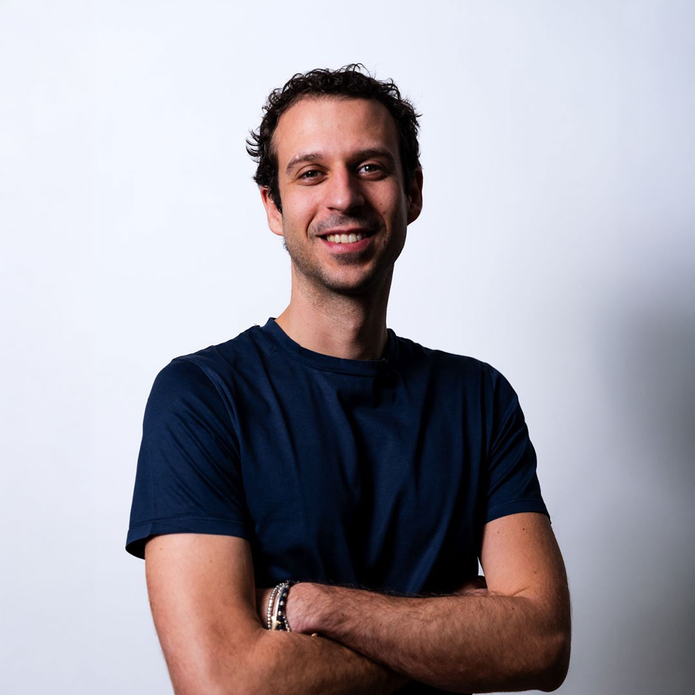
Marco Vita
Co-founder e CEO. Executive MBA al Politecnico di Milano. Arbitro di pallacanestro in Serie A.
Siamo LAIF, una software house con sede a Bologna che unisce software, dati e intelligenza artificiale per le aziende in Italia. La curiosità è il punto di partenza. Costruire insieme è il nostro modo di fare.
Tre fondatori nel 2024, oggi un team di oltre trenta professionisti tra software, dati, AI e prodotto.

Co-founder e CEO. Executive MBA al Politecnico di Milano. Arbitro di pallacanestro in Serie A.
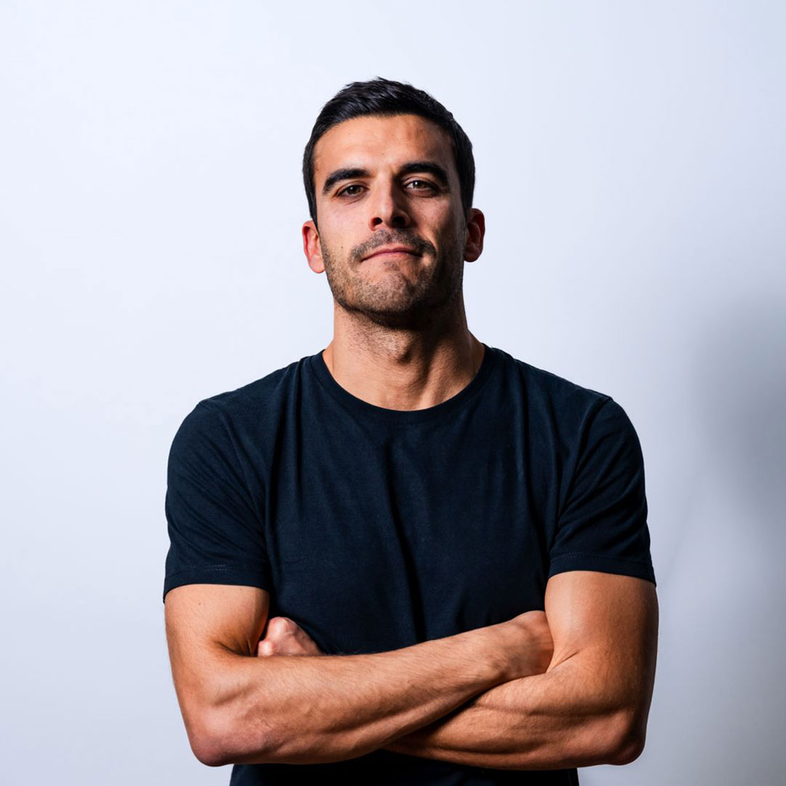
Co-founder e CCO. Co-founder di LAIF e di Helia.
Co-founder e CTO. Co-founder di LAIF e di Helia. Rendere la tecnologia accessibile.
Data & AI Team Leader
Da “Meet the team”, LinkedIn LAIF“Alpinista di giorno, board gamer la sera. Per me Laif è una nuova sfida.”
Data & AI Team Leader
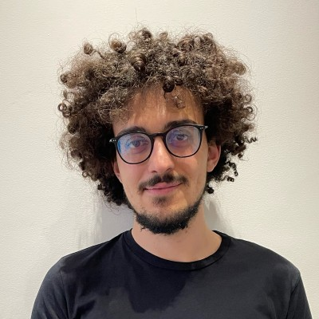
Data & AI Team Leader
Solution Architect
Da “Meet the team”, LinkedIn LAIF“Hardware bielorusso, modello mantovano, training set romagnolo.”
AI Engineer
Da “Meet the team”, LinkedIn LAIF“In Laif ho trovato un gruppo che stimola la nascita di nuovi approcci, dove ci si aiuta a vicenda e si cresce insieme.”
AI Engineer
AI Engineer
Frontend Developer
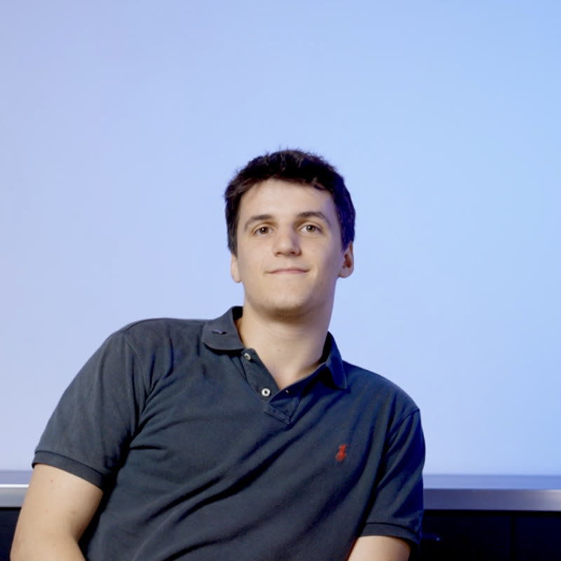
Full Stack AI Engineer
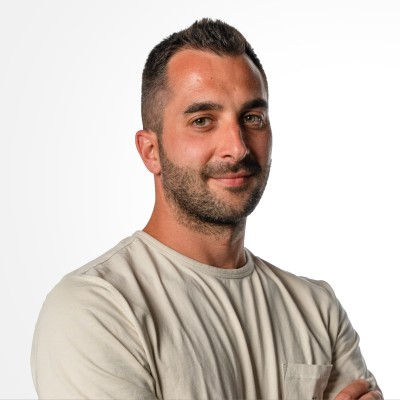
Full Stack Software Engineer
Da “Meet the team”, LinkedIn LAIF“Creiamo soluzioni reali, che risolvono problemi reali per le aziende.”
Full Stack Developer · ETL e infrastruttura
Da “Meet the team”, LinkedIn LAIF“In Laif ho trovato un ambiente davvero people-first, dove le persone sono al centro e la collaborazione fa la differenza.”
Full Stack Developer
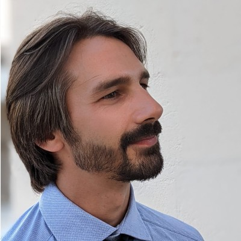
Full Stack Developer
Full Stack Developer
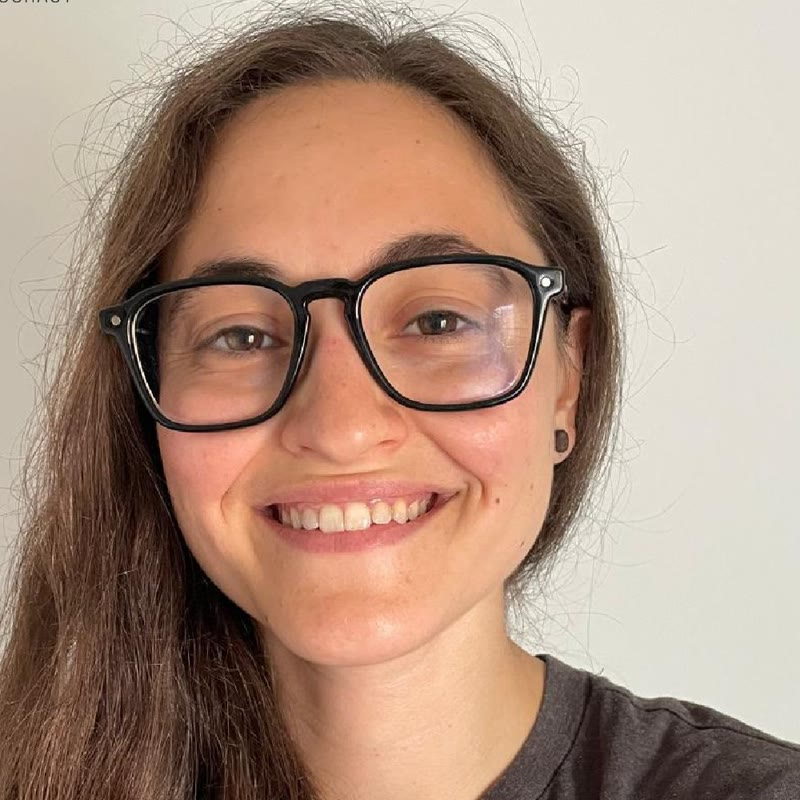
Front-End Developer
Da “Meet the team”, LinkedIn LAIF“Per me, LAIF rappresenta soprattutto l’opportunità di sviluppare prodotti che abbiano un impatto reale sul lavoro delle persone.”
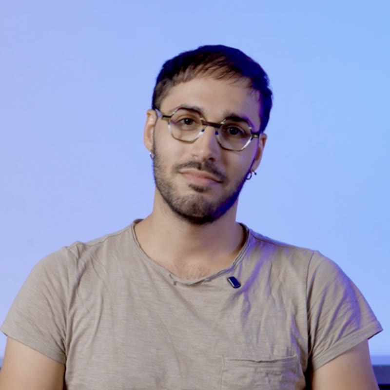
Product Engineer
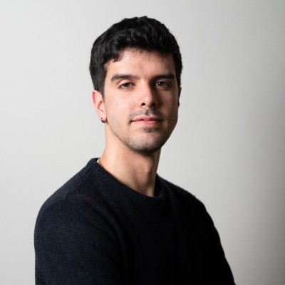
Product Engineer
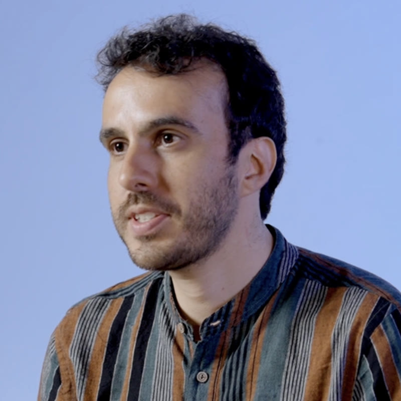
R&D Software Engineer
Full Stack Developer
L’accesso ai dati non dovrebbe essere un privilegio. Rendiamo l’innovazione digitale accessibile a ogni impresa, anche a chi è rimasto indietro. Quattro valori guidano il nostro modo di farlo.
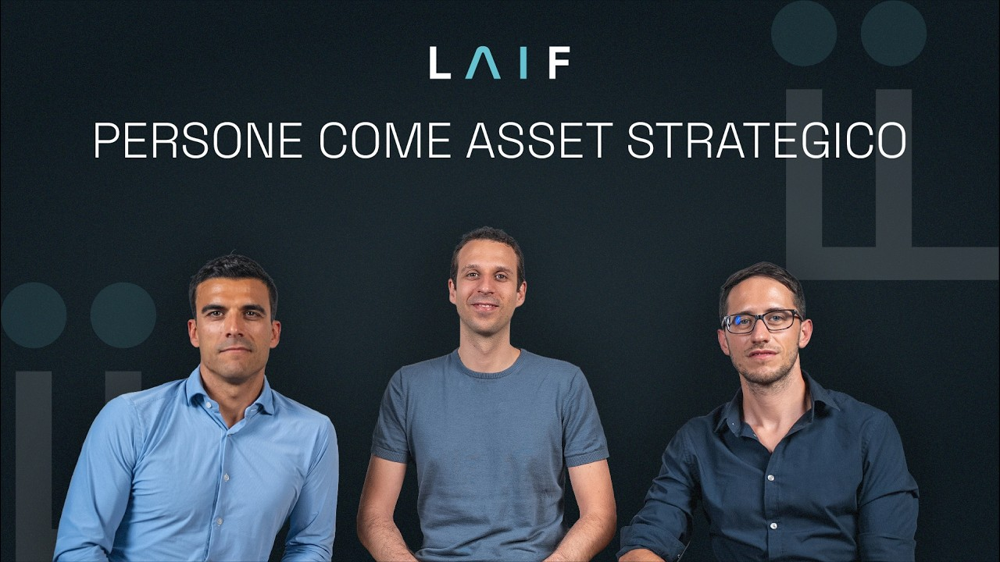
In LAIF ogni progetto, ogni scelta e ogni soluzione devono sempre generare un valore concreto per le persone a cui sono rivolti. Perché la tecnologia acquista davvero senso solo quando migliora il modo in cui le persone lavorano e investono il loro tempo.
Le persone – il team, i clienti e la comunità attorno a noi – sono il punto di partenza di ogni scelta.
Prima della strategia, della tecnologia e dei processi viene sempre l’impatto reale sulla vita di chi lavora con noi e di chi usa ciò che costruiamo.
Le persone sono il nostro unico vero asset. Prima di ogni scelta – strategica, tecnologica o di processo – ci chiediamo che effetto avrà sulle persone: chi lavora in Laif, chi usa, in modo diretto e indiretto, le soluzioni che costruiamo e la comunità attorno a noi.
Diciamo persone al primo posto, non cliente al primo posto: non per mettere il cliente in secondo piano, ma perché la cura del cliente nasce da un team sostenibile e in salute. Vogliamo perseguire obiettivi ambiziosi nel rispetto della sostenibilità umana, della crescita di lungo periodo e della fiducia reciproca. Assumiamo prima di tutto per attitudine, più che per competenze tecniche, e vinciamo come squadra: collaboriamo perché è più efficace, non solo più piacevole, consapevoli che prospettive diverse ci aiutano a decidere meglio. Le persone sono libere di esprimersi, coltivando i propri talenti.
Lavoriamo con flessibilità, fiducia e poche regole chiare: qualità, rispetto, trasparenza. La leadership non è un titolo ma una capacità attesa ad ogni livello: ascoltiamo, diamo e chiediamo feedback, incoraggiamo, offriamo aiuto anche non richiesto. Coltiviamo un forte senso di appartenenza. Non significa trasformare i colleghi in famiglia, ma condividere valori in una comunità, sostituendo modelli organizzativi superati con modi più sani di fare impresa.
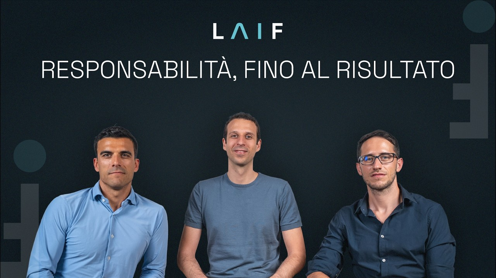
Per noi, un progetto va oltre il contratto e il semplice adempimento. Non siamo soddisfatti finché ciò che realizziamo non viene davvero utilizzato e non porta valore all’azienda con cui lavoriamo.
Le grandi idee contano solo quando diventano soluzioni che funzionano e vengono adottate davvero.
Ci prendiamo la responsabilità dei risultati e trasformiamo gli errori in apprendimento: niente alibi, perché la disciplina è il prezzo dell’eccellenza.
Lavoriamo nell’innovazione digitale, ma la tecnologia non è un fine: un’idea vale solo se crea valore reale. Le soluzioni che consegniamo devono funzionare in modo affidabile ed essere utilizzate davvero, e la nostra ossessione è accompagnarle fino all’adozione piena.
Misuriamo il successo dal cambiamento concreto che generiamo nel lavoro delle persone e la nostra bussola è una sola: portare a termine ciò che iniziamo, rispettando qualità e tempi. La libertà di sperimentare va sempre bilanciata con la sostenibilità dell’azienda: la redditività è la condizione non negoziabile per crescere e realizzare la nostra missione. La disciplina serve perché la flessibilità non diventi caos: lavoriamo in modo snello e misurato, su metriche condivise e trasparenti.
Siamo un’azienda di dati e li usiamo anche su noi stessi, per supportare le decisioni e tenere l’esecuzione al centro. Ci prendiamo la responsabilità delle nostre azioni, rifiutando la cultura dell’alibi. L’errore è parte naturale di un processo sano: quando sbagliamo, preferiamo farlo in fretta, per rialzarci e imparare velocemente. Da ogni progetto usciamo più bravi.
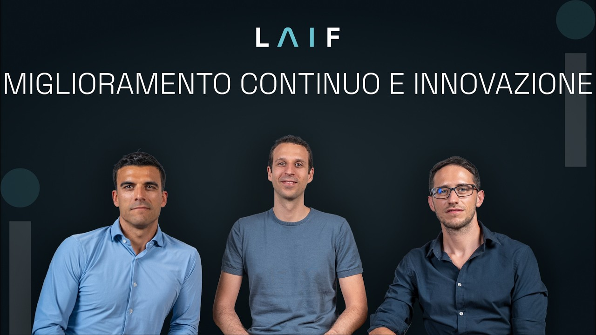
Migliorare significa prima di tutto eliminare ciò che non crea valore. Semplifichiamo processi, automatizziamo le attività ripetitive e ottimizziamo il tempo delle persone dove può davvero fare la differenza. Perché innovare significa anche non accontentarsi mai di ciò che funziona già, ma continuare a spostare i limiti un po’ più in là.
Eliminiamo complessità e passaggi inutili per investire il tempo solo dove crea valore.
Non ci accontentiamo mai: la nostra sete di eccellenza ci spinge a spostare i limiti sempre un po’ più in là.
Costruiamo il nostro modo di lavorare su operazioni efficienti, eliminando sovrastrutture, ripetizioni e passaggi superflui: il tempo delle persone va speso solo in attività che creano valore, cioè imparare, costruire, validare. Ogni passaggio inutile, in qualunque fase del progetto, dalla vendita al supporto, va rimosso. Automatizziamo ciò che è ripetitivo e a basso valore, e non ottimizziamo ciò che non dovrebbe nemmeno esistere. Preferiamo pochi strumenti, processi snelli e persone autonome.
Su questa base spingiamo in avanti. Siamo appassionati di ciò che costruiamo e troviamo soddisfazione, personale e collettiva, nella qualità e nell’utilità dei nostri prodotti. Siamo ambiziosi e non ci accontentiamo della mediocrità: la nostra ricerca dell’eccellenza è contagiosa, perché spinge tutti a curare i dettagli e ad affrontare le sfide difficili.
Affrontiamo il cambiamento con fiducia e umiltà, prendendoci rischi intelligenti, perché il rischio è l’unica strada verso l’evoluzione, per noi e per chi beneficia del nostro lavoro.
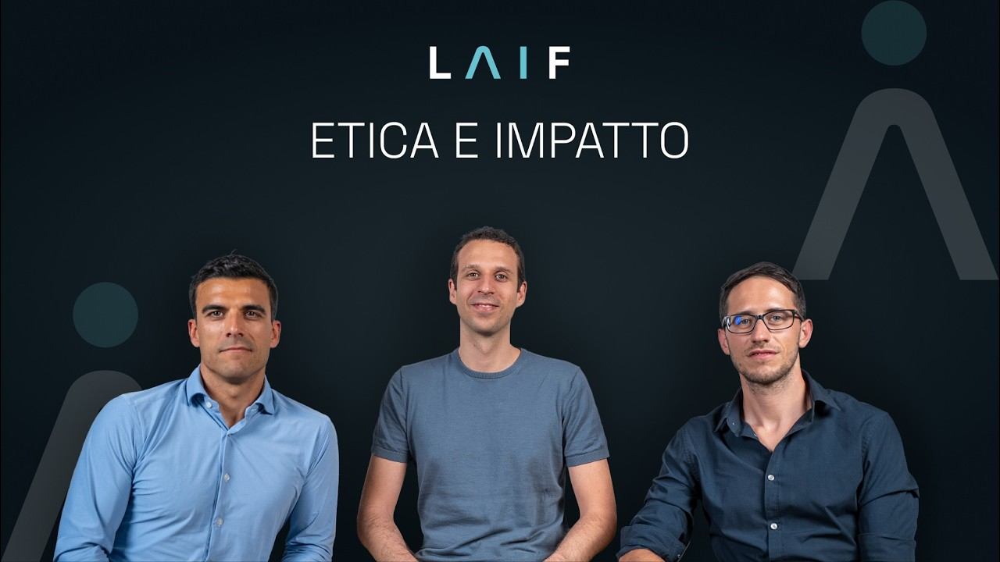
In un mondo in cui il profitto guida spesso le scelte, restare fedeli ai propri principi non è sempre semplice. Soprattutto quando significa scegliere a quali progetti dare vita e a quali rinunciare. In LAIF scegliamo di realizzare solo ciò di cui possiamo andare fieri, mettendo le nostre competenze al servizio di progetti che generano valore reale per le persone e per il loro lavoro.
Costruiamo solo ciò di cui andiamo fieri. Vogliamo restituire valore all’ecosistema, mettendo la forza dei dati alla portata di ogni impresa, comprese quelle a lungo lasciate indietro.
L’etica guida tutto ciò che facciamo: nel team, nei prodotti che costruiamo, nei clienti che scegliamo e nel rapporto con la società e l’ambiente. Tecnologia e AI non sono fini, ma mezzi per migliorare la vita delle persone, e sappiamo che gli strumenti che usiamo non sono eticamente neutri: ne studiamo il funzionamento e ci impegniamo a usarli con responsabilità, attenti a non farne mai un uso dannoso.
Il senso concreto della nostra missione è la Data Democracy: mettere l’innovazione digitale di qualità alla portata di ogni impresa, comprese le più piccole o quelle che sono rimaste indietro. È così che generiamo un impatto positivo sull’ecosistema attorno a noi.
Scegliamo con cura le persone, i clienti e i progetti con cui lavorare, e mettiamo le nostre competenze al servizio di chi crea valore reale, nel rispetto delle persone e del loro lavoro. Su questo prendiamo posizione: stiamo dalla parte di chi costruisce, e non le mettiamo mai al servizio di guerra, sfruttamento o discriminazione.
Ogni anno dedichiamo almeno un progetto pro bono a organizzazioni del terzo settore, perché restituire fa parte del nostro modo di fare impresa. Costruiamo ciò di cui andiamo fieri.
LAIF nasce nel 2024 dall’incontro tra ingegneria, matematica e fisica.
Oggi il progetto è mettere insieme prospettive diverse per costruire strumenti che entrino davvero nel lavoro. Il legame con il territorio incontra il desiderio di far crescere idee, persone e nuove iniziative.
Via Galliera 32 · 40121 Bologna
Incubiamo idee. Mettiamo competenze nei progetti pro bono. Costruiamo partnership.
Oltre al lavoro con le aziende, accompagniamo prodotti e iniziative che possono portare valore alle persone e al territorio. Un intreccio di esperienze che alimenta anche ciò che costruiamo per i clienti.
Scopri prodotti e iniziative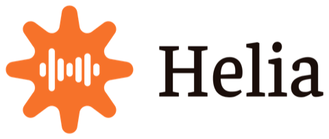
Raccontaci quale attività vuoi migliorare, chi è coinvolto e quali strumenti usate. Da qui definiamo il primo passo.
Parliamoci